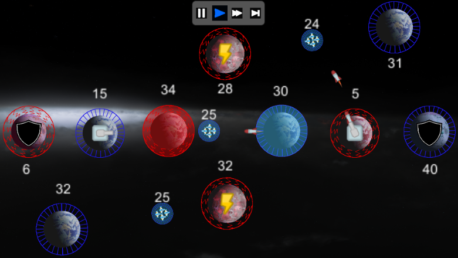
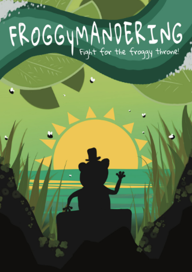

BIO
My name is Aaron Cummings and I am a fourth-year Game Design and Development student at Rochester Institute of Technology. Through my years in school I have developed skills in multiple different coding languages such as C#, C++, HTML, CSS, JavaScript, and Python. I have experience with 2D sprite design as well as 3D modeling and am proficient at using softwaer such as Visual Studios 2019, Visual Studio Code, Maya, Unity, MonoGame, and PyCharm.
GALLERY
In this project we were supposed to pick out or make and API to use as the base for an interactive search website that would help the user to search through a topic more easily than on the topics respective website. I chose a Anime Schedule Finder API that took information from Myanimelist.net and I used it to make the searching website here. During this project I learned a lot about how to use and work with APIs and also having my first in depth use of JavaScript. The hardest part of the project for me was getting all of the anime for the day selected then having to delete the ones without the genre selected. I overcame this simply by scouring the internet for any helpful tips on what I was doing and putting in a lot of time trying different methods until I got it working the way I wanted it too. All in all this project was a fun way for me to show off my introductory skills on how to utilize an API with Javascript to make a functioning webpage out of it.

In this project we were tasked with creating a game using JavaScript and a framework of our choice out of a few to chose from. I selected to use the PIXI framework to create my game and made it based off of the old arcade game Galaga. Over the course of this project I really deepened my understanding of how JavaScript works and how to utilize it for my needs, though I'm far from great at it. The hardest part of this project for me had to have been getting and using the keyboard inputs because we only used mouse controls in our previous games. I got over this much the same way as I do with any project, by using the internet and watching/reading many helpful tutorials eventually coming to one that really helped me understand what I needed to do. Overall this project just deepened my understanding and effectiveness of JavaScript and showed me how to make games from it for future use.
This project was designed to utilize my knowledge of multiple tools and techniques of web development and create a functioning website. This site showcases my knowledge of web components, the Bulma Library, localized storage, and how to properly utilize APIs into a website. This site utilizes extensive Javascript to create a platform for users to research the base stats of any hero in the game Dota 2 by using the opendota API to receive all data of each hero. This website also utilizes Firebase for cloud storage, this technology is used to show a community page that shows how many users have favorited each hero, so you can keep track of the most popular heroes.
This project was made to reinforce my JavaScript coding skills along with applying my knowledge of Canvas 2D and Audio within web development. This program takes a typical Lorenz Attractor and allows the user to play music and directly affect the x, y, and z coordinates of the attractor with said music. The attractor is shown to the user using Canvas 2D, but is viewed as a 3D representation due to the ability to rotate the camera to view the attractor from different angles.
Galactic Expanse
This game was made with my, and three others, Unity and C# knowledge as a class project. This game helped me to practically develop my C# coding skills and advance my knowledge of the Unity game engine. I took a lead role in the development in this project by setting up meetings, contacting members individually, deciding who would work on what and actively checking in on my group to see if anyone was struggling or needed assistance. The development of this game helped me to gain a better understanding of what it means to work as a team on a coding project and overcome the challenges that come with that territory.
Froggymandering
This game is a 3-6 person competitive board game based around the premise of gerrymandering. During the development of this game I took on a leadership role to help organize the project and ensure its development ran smoothly. We created the idea from scratch in two months and have a physical prototype that we bought from The Game Crafter. I learned a lot about the development of board games and what game mechanics work with each other to create a more fun gameplay experience rather than hinder each other.